时钟系统
时钟系统介绍
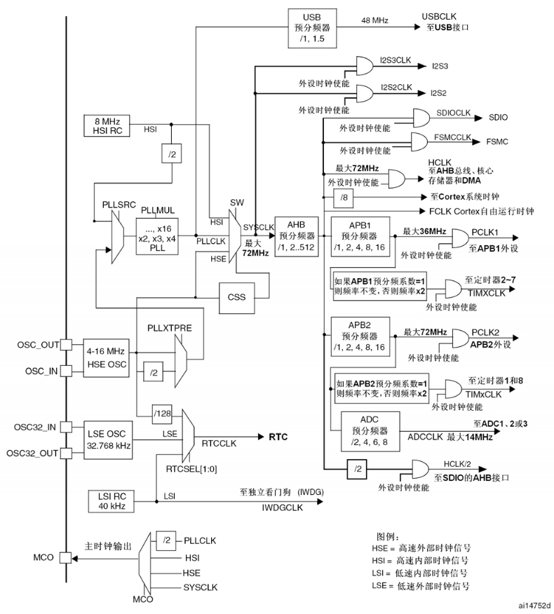
STM32有外部和内部时钟，每种又分为高速时钟和低速时钟，即HSE、HSI、LSE、LSI。
低速时钟主要提供给RTC（实时时钟）和独立看门狗使用，一般主要使用主要使用HSE和HSI。
时钟在芯片刚上电的时候，默认使用内部高速时钟。而外部时钟信号是由外部的晶振输入的，在精度和稳定性上都有很大优势，所以上电之后再通过软件配置，转而采用外部时钟信号。
所以，STM32有以下4个时钟源：
1）高速外部时钟（HSE）：以外部晶振作为时钟源，晶振频率可取范围为4～16 MHz，我们一般采用8 MHz的晶振。
2）高速内部时钟（HSI）：由内部RC振荡器产生，频率为8 MHz，但不稳定。
3）低速外部时钟（LSE）：以外部晶振作为时钟源，主要提供给实时时钟模块，所以一般采用32.768 kHz。配套STM32实验板上用的是32.768 kHz、6p负载规格的晶振。
4）低速内部时钟（LSI）：由内部RC振荡器产生，也主要提供给实时时钟模块，频率大约为40 kHz。
时钟走向举例
以最常用的高速外部时钟（HSE）为例分析，首先假定我们在外部提供的晶振的频率为8 MHz。
-
1）从左端的OSC_OUT和OSC_IN开始，这两个引脚分别接到外部晶振的两端。
-
2）8 MHz的时钟遇到了第一个分频器PLLXTPRE（HSE divider forPLL entry），在这个分频器中，可以通过寄存器配置，选择它的输出。它的输出时钟可以是对输入时钟的二分频或不分频。本例中，我们选择不分频，所以经过PLLXTPRE后，还是8MHz的时钟。
-
3）8MHz的时钟遇到开关PLLSRC（PLL entry clock source），我们可以选择其输出，输出为外部高速时钟（HSE）或是内部高速时钟（HSI）。这里选择输出为HSE，接着遇到锁相环PLL，具有倍频作用，在这里我们可以输入倍频因子PLLMUL（PLL multiplicationfactor）。经过PLL的时钟称为PLLCLK。倍频因子我们设定为9倍频，也就是说，经过PLL之后，我们的时钟从原来8MHz的HSE变为72 MHz的PLLCLK。
-
4）紧接着又遇到了一个开关SW，经过这个开关之后就是STM32的系统时钟（SYSCLK）了。通过这个开关，可以切换SYSCLK的时钟源，可以选择HSI、PLLCLK或HSE。我们选择PLLCLK时钟，所以SYSCLK就为72 MHz了。
-
5）PLLCLK在输入到SW前，还流向了USB预分频器，这个分频器输出为USB外设的时钟（USBCLK）。
-
6）回到SYSCLK, SYSCLK经过AHB预分频器，分频后再输入到其他外设。如输出到称为HCLK、FCLK的时钟，还直接输出到SDIO外设的SDIOCLK时钟、存储器控制器FSMC的FSMCCLK时钟，以及作为APB1、APB2的预分频器的输入端。本例设置AHB预分频器不分频，即输出的频率为72 MHz。
-
7）GPIO外设是挂载在APB2总线上的，APB2的时钟是APB2预分频器的输出，而APB2预分频器的时钟来源是AHB预分频器。因此，把APB2预分频器设置为不分频，我们就可以得到GPIO外设的时钟也等于HCLK，即72 MHz。
NVIC中断控制器
中断控制器介绍
见文知意，NVIC负责控制中断的响应，不可屏蔽中断（NMI）和外部中断都由它来处理。
需要配置的主要参数有：
-
中断向量的名称（谁来触发中断，操作中断屏蔽寄存器相应位置写1）
-
使能还是关闭中断向量
-
响应优先级
-
抢占优先级（主要）
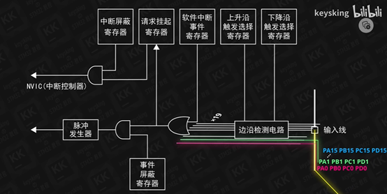
19个中断线，其中前16个代表不同的IO口，PA0、PB0、PC0……共用一条线。
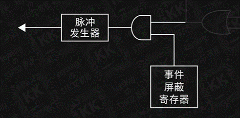
事件信号由其他外设处理，中断信号由中断函数处理。
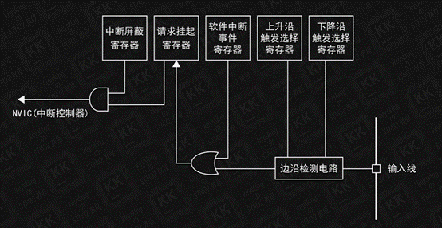
19条线由相同的寄存器控制，每个寄存器的不同位控制不同的中断线。
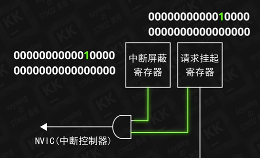
与门使得中断屏蔽寄存器可以控制中断是否被触发。
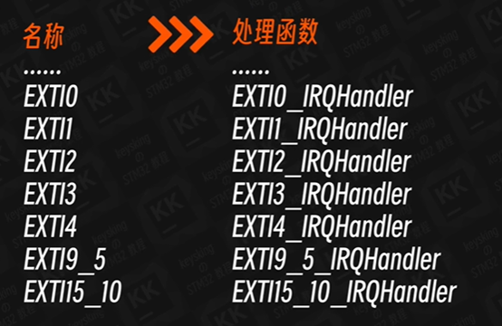
中断名称指向处理函数。其中EXTI5-9，10-15共用一个处理函数。
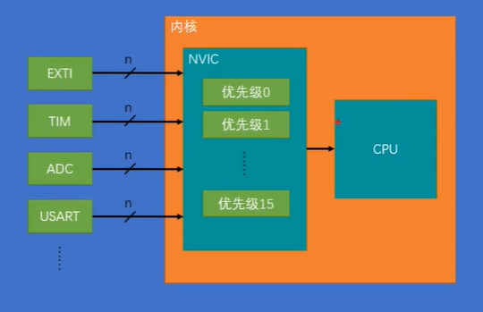
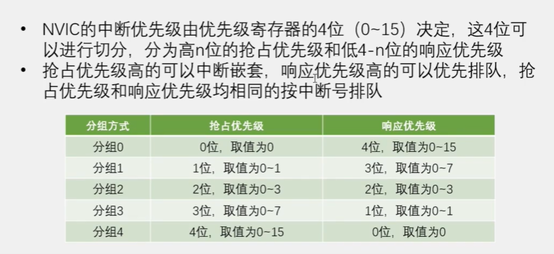
NVIC能配置的是16种中断向量，而不是16个，当工程中有超过16个中断向量时，必然有两个以上的中断向量是使用相同的中断种类，而具有相同中断种类的中断向量不能互相嵌套。
配置外部中断
-
1）使能EXTIx线的时钟和第二功能AFIO时钟。
-
2）配置EXTIx线的中断优先级。
-
3）配置EXTI中断线I/O。
-
4）选定要配置为EXTI的I/O口线和I/O口的工作模式。
-
5）EXTI中断线工作模式配置。
- 配置EXTI_Line，查看IO口对应的EXTIx。
- 设置模式可以选择Interrupt或者Event。
- 设置上升沿还是下降沿触发
- 使能
AFIO
AFIO（alternate-function I/O），指GPIO端口的复用功能，GPIO除了用作普通的输入输出（主功能），还可以作为片上外设的复用输入输出，如串口、ADC，这些就是复用功能。大多数GPIO都有一个默认复用功能，有的GPIO还有重映射功能。重映射功能是指把原来属于A引脚的默认复用功能，转移到B引脚进行使用，前提是B引脚具有这个重映射功能。当把GPIO用作EXTI外部中断或使用重映射功能的时候，必须开启AFIO时钟，而在使用默认复用功能的时候，就不必开启AFIO时钟了。本章主要讲NVIC外部中断，所以需要开启AFIO时钟。用RCC。
对于外部中断来说只要知道需要开启AFIO时钟就可以了。
AFIO还可以对终端端口有选择功能。如PA0和PB0冲突了，则由AFIO选择传入哪个中断。AFIO还可以控制端口复用功能。
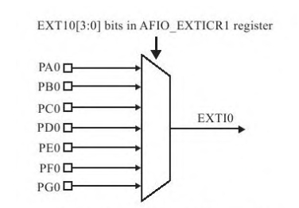
串口通信
异步串口通信协议
STM32的串口非常强大，它不仅支持最基本的通用串口同步、异步通信，还具有LIN总线功能（局域互联网）、IRDA功能（红外通信）、SmartCard功能。
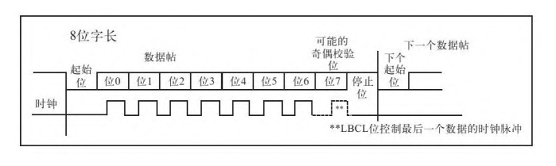
要配置串口通信，至少要设置以下几个参数：字长（一次传送的数据长度）、波特率（每秒传输的数据位数）、奇偶校验位，还有停止位。
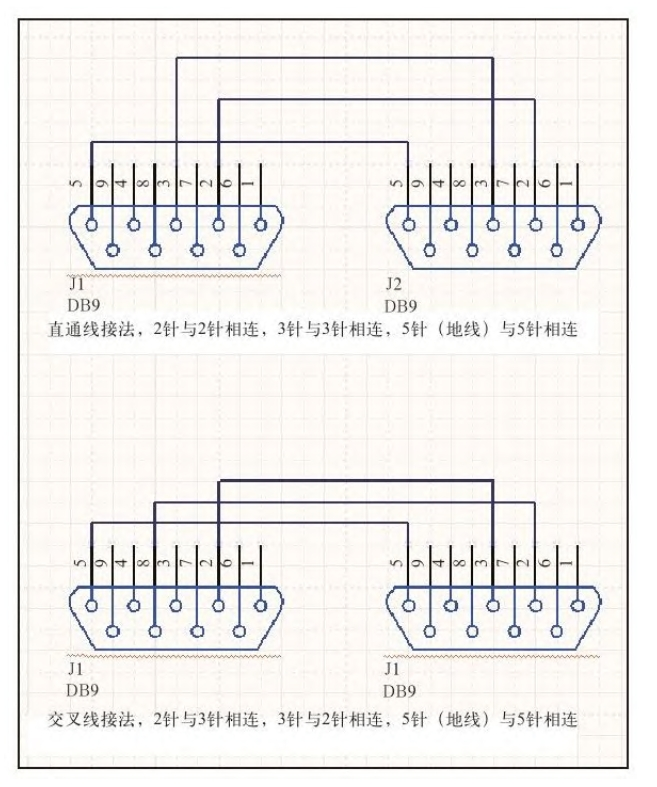
如果使用PC接法，板子与PC之间接法相同，通信使用交叉线；两个相同板子之间接法也相同，通信也是使用交叉线。
数据传输过程
需要发送数据时，内核或DMA外设（一种数据传输方式，在第10章介绍）把数据从内存（变量）写入到发送数据寄存器TDR后，发送控制器将适时地自动把数据从TDR加载到发送移位寄存器，然后通过串口线Tx，把数据一位一位地发送出去，当数据从TDR转移到移位寄存器时，会产生发送寄存器TDR已空事件TXE，当数据从移位寄存器全部发送出去时，会产生数据发送完成事件TC，这些事件可以在状态寄存器中查询到。而接收数据则是一个逆过程，数据从串口线Rx一位一位地输入到接收移位寄存器，然后自动地转移到接收数据寄存器RDR，最后用内核指令或DMA读取到内存（变量）中。
串口配置过程
选定PA9为Tx、PA10为Rx，那么它们的GPIO模式要如何配置呢？Tx为发送端，输出引脚，而且现在GPIO是使用复用功能，所以要把它配置为复用推挽输出模式（GPIO_Mode_AF_PP）；而Rx引脚为接收端，输入引脚，所以配置为浮空输入模式（GPIO_Mode_IN_FLOATING）。如果在使用复用功能时，对GPIO的模式不太确定的话，我们可以从《STM32参考手册》的GPIO章节中查询得到.
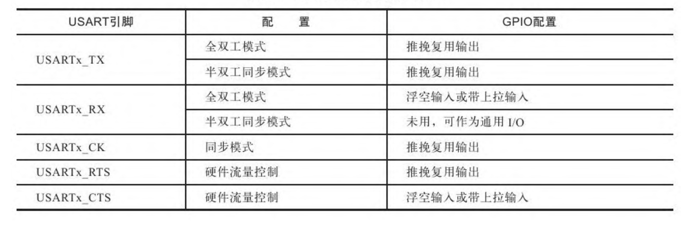
通信协议要求两个通信器件之间的波特率、字长、停止位、奇偶校验位都相同。
- 字长（一次传送的数据长度）可以为8或者9
- 波特率（每秒传输的数据位数）一般可以为115200
- 奇偶校验位，可以没有
- 停止位，可以设置为1
- 硬件流控制
- 关于硬件流，在STM32的很多外设都具有硬件流的功能，其功能表现为：当外设硬件处于准备好的状态时，硬件启动自动控制，而不需要软件再进行干预。在串口外设的硬件流具体表现为：使用串口的RTS（Request toSend）和CTS（Clear to Send）针脚，当串口已经准备好接收新数据时，由硬件流自动把RTS针拉低（向外表示可接收数据）；在发送数据前，由硬件流自动检查CTS针是否为低（表示是否可以发送数据），再进行发送。本串口例程没有使用到CTS和RTS，所以不采用硬件流控制。
- 串口模式，为了配置双线全双工通信，需要把Rx和Tx都开启。
DMA
DMA（Direct Memory Access，直接存储器存取），是一种可以大大减轻CPU工作量的数据存取方式，因而被广泛地使用。早在8086的应用中就已经有Intel的8237这种典型的DMA控制器，而STM32的DMA则是以类似外设的形式添加到Cortex内核之外的。在硬件系统中，主要由CPU（内核）、外设、内存（SRAM）、总线等结构组成，数据经常要在内存与外设之间转移，或从外设A转移到外设B。在转移数据的过程中会占用CPU十分宝贵的资源，所以我们希望CPU更多地被用在数据运算或响应中断之中，而数据转移的工作交由其他部件完成。DMA正是为CPU分担了数据转移的工作。因为DMA的存在CPU才被解放出来，它可以在DMA转移数据的过程中同时进行数据运算、响应中断，大大提高效率。
配置DMA异步串口通信
- 外设数据寄存器的基地址，如果要发送给串口，则填入串口的数据寄存器（不是移位寄存器）的地址。
- 内存基地址，通常赋予某个数组的基地址（数组名）。然后利用自增把串口的数据一个一个填写进去或者一个一个读出发送给串口。
- 数据传输方向
- 传输数据大小
- 设置外设和内存是否自增
- 外设和内存的数据单元大小，可以为字节、半字节和字
- DMA模式，可以为循环模式或者正常模式，循环模式即在传输完一轮数据之后再重新传输，这种方式很适合ADC不断采集数据的场合。正常模式只做一次完整传输。
- MA通道的优先级，总线矩阵根据其DMA通道的优先级进行总线协调分配。
- 是否内存到内存的DMA传输。DMA传输可以在外设与内存、外设与外设以及内存与内存之间进行。可以是disable或者enable
ADC
ADC（Analog to Digital Converter，模/数转换器）。在模拟信号需要以数字形式处理、存储或传输时，模/数转换器几乎必不可少。STM32在片上集成的ADC外设非常强大。STM32F103xC、STM32F103xD和STM32F103xE增强型产品内嵌3个12位的ADC，每个ADC共用多达21个外部通道，可以实现单次或多次扫描转换。各通道的A/D转换可以单次、连续、扫描或间断模式执行；ADC的结果可以左对齐或右对齐方式存储在16位数据寄存器中；模拟看门狗特性允许应用程序检测输入电压是否超出用户定义的高/低阈值。
ADC参数
对于ADC来说，我们最关注的就是它的分辨率、转换时间、ADC类型、参考电压范围。
- 分辨率：12位分辨率。不能直接测量负电压，所以没有符号位，即其最小量化单位LSB=VREF+/212。
- 转换时间：转换时间是可编程的。采样一次至少要用14个ADC时钟周期，而ADC的时钟频率最高为14 MHz，也就是说，它的采样时间最短为1μs。足以胜任中、低频数字示波器的采样工作。
- ADC类型：ADC类型决定了其性能的极限，STM32的ADC是逐次比较型ADC。
- 参考电压范围：参考电压负极是要接地的，即VREF-=0V。而参考电压正极的范围为2.4V≤VREF+≤3.6V，所以STM32的ADC是不能直接测量负电压的，而且其输入的电压信号的范围为：VREF-≤VIN≤VREF+。当需要测量负电压或测量的电压信号超出范围时，要先经过运算电路进行平移或利用电阻分压。
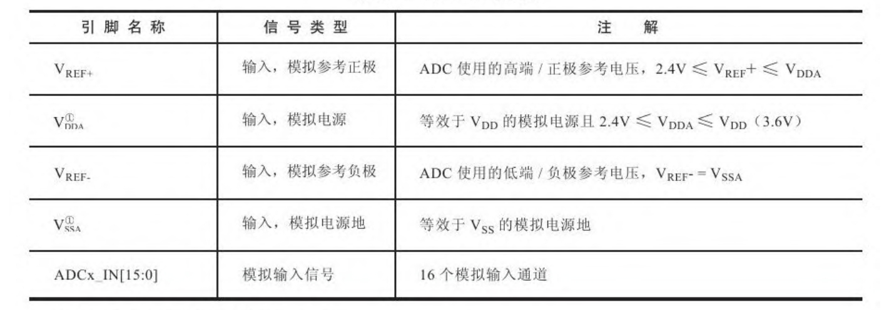
工作模式
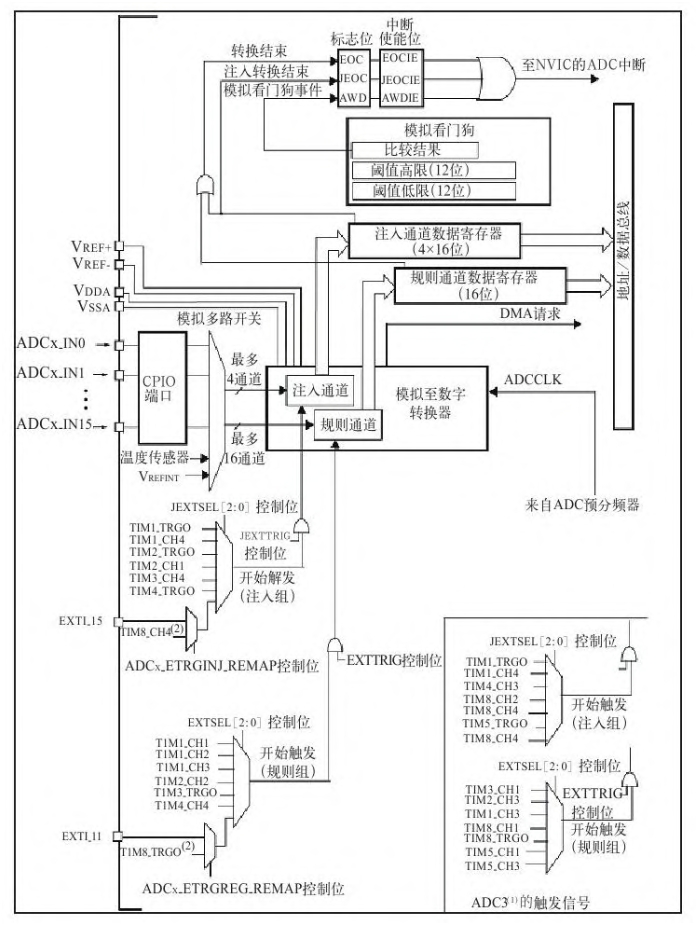
所有的器件都是围绕中间的模拟至数字转换器部分（下面简称ADC部件）展开的。它的左端为VREF+、VREF-等ADC参考电压，ADCx_IN0～ADCx_IN15为ADC的输入信号通道，即某些GPIO引脚。输入信号经过这些通道被送到ADC部件的注入通道或规则通道，ADC部件需要受到触发信号才开始进行转换，如EXTI外部触发、定时器触发，也可以使用软件触发。ADC部件接收到触发信号之后，在ADCCLK时钟的驱动下对输入通道的信号进行采样，并进行模数转换，其中ADCCLK是来自ADC预分频器的。
ADC部件转换后的数值被保存到一个16位的规则通道数据寄存器（或注入通道数据寄存器）之中，我们可以通过CPU指令或DMA把它读取到内存（变量）。模数转换之后，可以触发DMA请求或者触发ADC的转换结束事件。如果配置了模拟看门狗，并且采集得的电压大于阈值，会触发看门狗中断。
ACD数据采集，DMA模式
ADC时往往采用DMA传输方式，由DMA把ADC外设转换的数据传输到SRAM，再进行处理，甚至直接把ADC的数据转移到串口发送给上位机。
这里涉及ADC通道的知识，每个ADC通道都对应一个GPIO引脚端口，GPIO的引脚在设置为模拟输入模式后可用于模拟电压的输入。ADC_DR数据寄存器保存了ADC转换后的数值，以它作为DMA的传输源地址。
配置ADC
- DC_Mode：STM32具有多个ADC，而不同的ADC又是共用通道的，当两个ADC采集同一个通道的先后顺序、时间间隔不同，就演变出了各种各样的模式，如同步注入模式、同步规则模式等10种模式，应选择适合的模式以适应采集数据的要求。
- DC_ScanConvMode：当有多个通道需要采集信号时，可以把ADC配置为按一定的顺序来对各个通道进行扫描转换，即轮流采集各通道的值。若采集多个通道，必须开启此模式。
- DC_ContinuousConvMode：连续转换模式，此模式与单次转换模式相反，单次转换模式ADC只采集一次数据就停止转换。而连续转换模式则在上一次ADC转换完成后，立即开启下一次转换。
- DC_ExternalTrigConv：ADC需要在接收到触发信号后才开始进行模数转换，如外部中断触发（EXTI线）、定时器触发，这两个为外部触发信号，如果不使用外部触发信号可以使用软件控制触发。
- DC_DataAlign：数据对齐方式。ADC转换后的数值被保存到数据寄存器（ADC_DR）的0～15位或16～32位，数据宽度为16位，而ADC转换精度为12位。把12位的数据保存到16位的区域，就涉及左对齐和右对齐的问题。这里的左、右对齐跟Word文档中的文本左、右对齐是一样的意思。左对齐即ADC转换的数值最高位D12与存储区域的最高位Bit15对齐，存储区域的低4位无意义。右对齐则相反，ADC转换的数值最低位D0保存在存储区域的最低位Bit0，高4位无意义。一般选择右对齐即可。
- 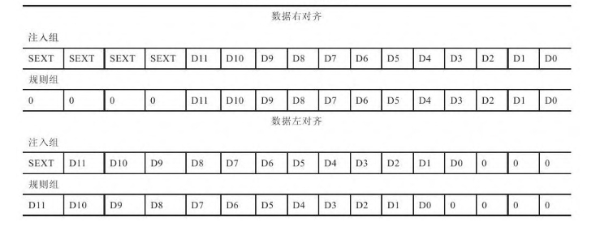
- DC_NbrOfChannel：这个成员保存了要进行ADC数据转换的通道数，可以为1～16个。
ADC时钟配置
ADC时钟频率越高，转换速度也就越快，但ADC时钟有上限值，即不能超过14 MHz。
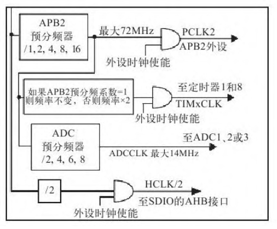
ADC的时钟（ADCCLK）为ADC预分频器的输出，而ADC预分频器的输入则为高速外设时钟（PCLK2）。使用RCC_ADCCLKConfig()库函数实质就是设置ADC预分频器的分频值，可设置为PCLK2的2、4、6、8分频。PCLK2的常用时钟频率为72 MHz，而ADCCLK必须低于14 MHz，所以在这个情况下，ADCCLK最高频率为PCLK2的8分频，即ADCCLK=9 MHz。若希望使ADC以最高频率14 MHz运行，可以把PCLK2配置为56 MHz，然后再4分频得到ADCCLK。ADC的转换时间不仅与ADC的时钟有关，还与采样周期相关。每个不同的ADC通道都可以设置为不同的采样周期。
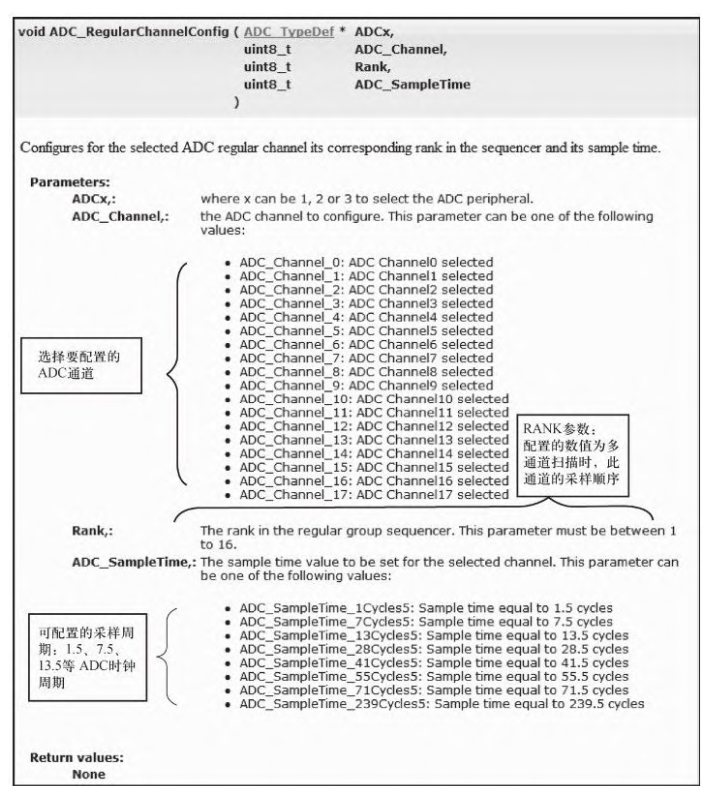
ADC_RegularChannelConfig()函数中的RANK值是指在多通道扫描模式时，本通道的扫描顺序。例如通道1、4、7的RANK值分别被配置为3、2、1的话，在ADC扫描时，扫描的顺序为通道7、通道4，最后扫描通道1。
ADC_SampleTime的参数值则用于配置本通道的采样周期，最短可配置为1.5个采样周期，这里的周期指ADCCLK时钟周期。
假设把ADC1通道11配置为55.5个采样周期，而ADCCLK在前面已经配置为9 MHz，根据STM32的ADC采样时间计算公式：
TCONV=采样周期+12.5个周期
公式中的采样周期就是本函数中配置的ADC_SampleTime，而后边加上的12.5个周期为固定的数值。所以，ADC1通道11的转换时间TCONV=（55.5+12.5）×1/9≈7.56μs。
在开始ADC转换之前，需要启动ADC的自校准。ADC有一个内置自校准模式，校准可大幅减小因内部电容器组的变化而造成的准精度误差。在校准期间，在每个电容器上都会计算出一个误差修正码（数字值），这个码用于消除在随后的转换中每个电容器上产生的误差。
volatile 变量的使用
不使用volatile关键字修饰的变量a在被访问的时候可能会直接从CPU的寄存器中取出（因为之前变量a被访问过，也就是说之前就从内存中取出a的值保存到某个CPU寄存器中），之所以直接从寄存器中取值而不去内存中取值，这是编译器优化代码的结果（访问CPU寄存器比访问内存快得多）。这里的CPU寄存器指R0、R1等CPU通用寄存器，用于CPU运算及暂存数据的，不是指外设中的寄存器。用volatile声明的类型变量表示可以被某些编译器未知的因素更改，比如：操作系统、硬件或者其他线程等。因为ADC_ConvertedValue这个变量值随时都是会被DMA控制器改变的，所以我们用volatile来修饰它，确保每次读取到的都是实时的ADC转换值。
电压值转换公式
由转换值计算出来的电压值，其计算公式是ADC通用的：
实际电压值=ADC转换值×LSB
STM32的ADC的精度为12位，而配套板子中VREF+接的参考电压值为3.3V，所以LSB=3.3/2^12。
即：ADC_ConvertedValueLocal=（float）ADC_ConvertedValue/4096*3.3；
SysTick
SysTick定时器被捆绑在NVIC中，用于产生SysTick异常（异常号：15）。
Cortex-M3在内核部分包含了一个简单的定时器——SysTick。因为所有的CM3芯片都带有这个定时器，软件在不同芯片生产厂商的CM3器件间的移植工作就得以简化。该定时器的时钟源可以是内部时钟（FCLK, CM3上的自由运行时钟），或者是外部时钟（CM3处理器上的STCLK信号）。不过，STCLK的具体来源则由芯片设计者决定，因此不同产品之间的时钟频率可能大不相同。因此，需要阅读芯片的使用手册来确定选择什么作为时钟源。在STM32中SysTick以HCLK（AHB时钟）或HCLK/8作为运行时钟。
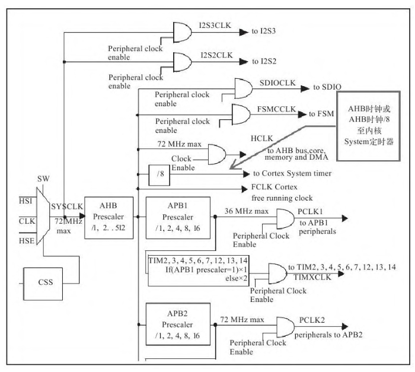
SysTick配置
要使SysTick进行以上工作必须要进行SysTick配置。它的控制配置很简单，只有三个控制位和一个标志位，都位于寄存器STK_CTRL（SysTick control and status register）中。
-
（1）Bit0：ENABLE为SysTick的使能位，此位为1的时候使能SysTick定时器，此位为0的时候关闭SysTick定时器。
-
（2）Bit1：TICKINT为异常触发使能位，此位为1的时候并且STK_VAL计数至0时会触发SysTick异常，此位被配置为0的时候不触发异常。
-
（3）Bit2：CLKSOURCE为SysTick的时钟选择位，此位为1时SysTick的时钟为AHB时钟，此位为0时SysTick时钟为AHB/8（AHB的8分频）。
-
（4）Bit16：COUNTFLAG为计数为0标志位，若STK_VAL计数至0，此标志位会被置1。
定时时间计算
定时的时间，下面为计算公式：
T=ticks×（1/f）
其中，T为要定时的总时间；ticks为SysTick_Config()的输入参数，经过ticks个脉冲（经过ticks个时钟周期）后将触发中断，触发中断后又重新开始计数。；1/f即为SysTick使用的时钟源的时钟周期，f为该时钟源的时钟频率，当时钟源确定后为常数。
定时器
TM32一共有8个都为16位的定时器。其中TIM6、TIM7是基本定时器；TIM2、TIM3、TIM4、TIM5是通用定时器；TIM1和TIM8是高级定时器。这些定时器使STM32具有定时、信号的频率测量、信号的PWM测量、PWM输出、三相6步电机控制及编码器接口等功能。
基本定时器
基本定时器TIM6和TIM7只具备最基本的定时功能，就是累加的时钟脉冲数超过预定值时，能触发中断或触发DMA请求。由于在芯片内部与DAC外设相连，可通过触发输出驱动DAC，也可以作为其他通用定时器的时钟基准。
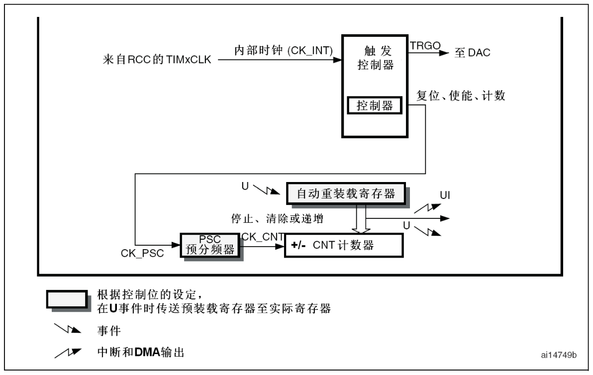
两个基本定时器使用的时钟源都是TIMxCLK，时钟源经过PSC预分频器输入至脉冲计数器TIMx_CNT，基本定时器只能工作在向上计数模式，在重载寄存器TIMx_ARR中保存的是定时器的溢出值。工作时，脉冲计数器TIMx_CNT由时钟触发进行计数，当TIMx_CNT的计数值X等于重载寄存器TIMx_ARR中保存的数值N时，产生溢出事件，可触发中断或DMA请求。然后TIMx_CNT的值重新被置为0，重新向上计数。
通用定时器
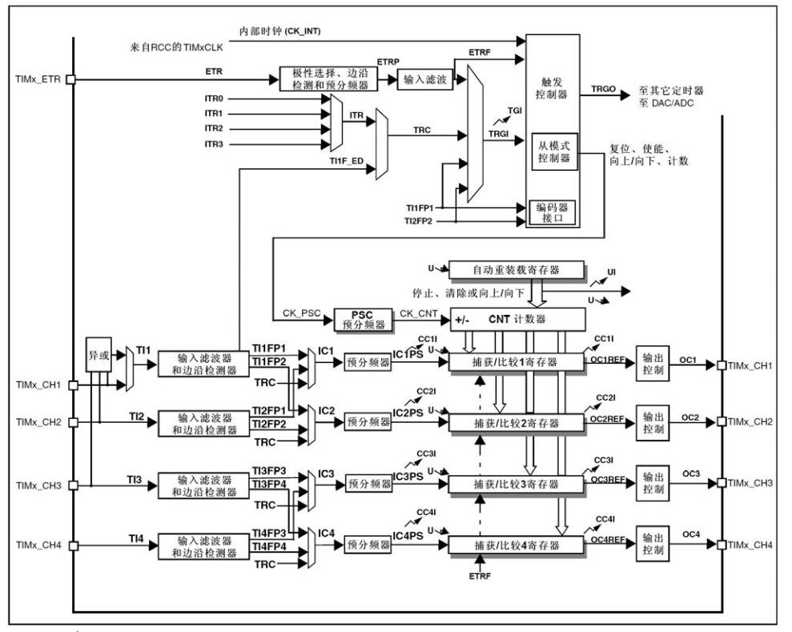
通用定时器除了基本的定时，它主要用在测量输入脉冲的频率、脉冲宽与输出PWM脉冲的场合，还具有编码器的接口。
通用定时器的基本计时功能与基本定时器的工作方式是一样的，同样把时钟源经过预分频器输出到脉冲计数器TIMx_CNT累加，溢出时就产生中断或DMA请求。而通用定时器比基本定时器多出的强大功能，就是因为通用定时器多出了一种寄存器——捕获/比较寄存器TIMx_CCR（capture/compare register），它在
- 输入时被用于捕获（存储）输入脉冲在电平发生翻转时脉冲计数器TIMx_CNT的当前计数值，从而实现脉冲的频率测量；
- 在输出时被用来存储一个脉冲数值，把这个数值用于与脉冲计数器TIMx_CNT的当前计数值进行比较，根据比较结果进行不同的电平输出。
PWM输出过程分析
通用定时器可以利用GPIO引脚进行脉冲输出，在配置为比较输出、PWM输出功能时，捕获/比较寄存器TIMx_CCR被用作比较功能，下面把它简称为比较寄存器。
这里直接举例说明定时器的PWM输出工作过程：若配置脉冲计数器TIMx_CNT为向上计数，而重载寄存器TIMx_ARR被配置为N，即TIMx_CNT的当前计数值数值X在TIMxCLK时钟源的驱动下不断累加，当TIMx_CNT的数值X大于N时，会重置TIMx_CNT数值为0并重新计数。
而在TIMx_CNT计数的同时，TIMx_CNT的计数值X会与比较寄存器TIMx_CCR预先存储的数值A进行比较。当脉冲计数器TIMx_CNT的数值X小于比较寄存器TIMx_CCR的值A时，输出高电平（或低电平）；相反地，当脉冲计数器的数值X大于或等于比较寄存器的值A时，输出低电平（或高电平）。如此循环，得到的输出脉冲周期就为重载寄存器TIMx_ARR存储的数值（N+1）乘以触发脉冲的时钟周期，其脉冲宽度则为比较寄存器TIMx_CCR的值A乘以触发脉冲的时钟周期，即输出PWM的占空比为A/（N+1）。
PWM输入过程分析
而当定时器被配置为输入功能时，可以用于检测输入到GPIO引脚的信号（频率检测、输入PWM检测），此时捕获/比较寄存器TIMx_CCR被用作捕获功能，下面把它简称为捕获寄存器。
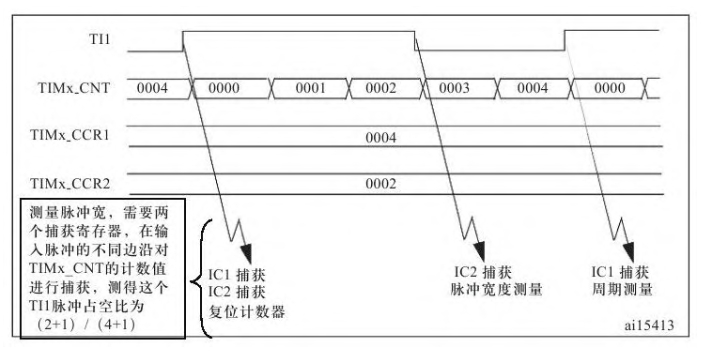
要测量的PWM脉冲通过GPIO引脚输入到定时器的脉冲检测通道，其时序为图中的TI1。把脉冲计数器TIMx_CNT配置为向上计数，重载寄存器TIMx_ARR的N值配置为足够大。在输入脉冲TI1的上升沿到达时，触发IC1和IC2输入捕获中断，这时把脉冲计数器TIMx_CNT的计数值复位为0，于是TIMx_CNT的计数值X在TIMxCLK的驱动下从0开始不断累加，直到TI1出现下降沿，触发IC2捕获事件，此时捕获寄存器TIMx_CCR2把脉冲计数器TIMx_CNT的当前值
2存储起来，而TIMx_CNT继续累加，直到TI1出现第二个上升沿，触发了IC1捕获事件，此时TIMx_CNT的当前计数值4被保存到TIMx_CCR1。很明显TIMx_CCR1（加1）的值乘以TIMxCLK的周期，即为待检测的PWM输入脉冲周期，TIMx_CCR2（加1）的值乘以TIMxCLK的周期，就是待检测的PWM输入脉冲的高电平时间，有了这两个数值就可以计算出PWM脉冲的频率、占空比了。
定时器的时钟源
从时钟源方面来说，通用定时器比基本定时器多了一个选择，它可以使用外部脉冲作为定时器的时钟源。使用外部时钟源时，要使用寄存器进行触发边沿、滤波器带宽的配置。如果选择内部时钟源的话则与基本定时器一样，也为TIMxCLK。但要注意的是，所有定时器（包括基本、通用和高级）使用内部时钟时，定时器的时钟源都被称为TIMxCLK，但TIMxCLK的时钟来源并不是完全一样的。

TIM2～7也就是基本定时器和通用定时器，TIMxCLK的时钟来源是APB1预分频器的输出。当APB1的分频系数为1时，则TIM2～7的TIMxCLK直接等于该APB1预分频器的输出，而APB1的分频系数不为1时，TIM2～7的TIMxCLK则为APB1预分频器输出的2倍。
而对于TIM1和TIM8这两个高级定时器，TIMxCLK的时钟来源则是APB2预分频器的输出，同样它也根据分频系数分为两种情况。常见的配置中AHB=72 MHz, APB2预分频器的分频系数被配置为1，此时PCLK2刚好达到最大值72 MHz，而TIMxCLK则直接等于APB2分频器的输出，即TIM1和TIM8的时钟TIMxCLK=AHB=72 MHz。虽然这种配置下最终TIMxCLK的时钟频率相等，但必须清楚实质上它们的时钟来源是有区别的。还要强调的是：TIMxCLK是定时器内部的时钟源，但在时钟输出到脉冲计数器TIMx_CNT前，还经过一个预分频器PSC，最终用于驱动脉冲计数器TIMx_CNT的时钟频率根据预分频器PSC的配置而定。

配置TIM输出PWM波
初始化GPIO，包括时钟、模式、Pin脚等。
时基初始化
时基初始化即配置基本定时器只具有的那部分功能
-
1）. TIM_Period：定时周期，实质是存储到重载寄存器TIMx_ARR的数值，脉冲计数器从0累加到这个值上溢或从这个值自减至0下溢。这个数值加1然后乘以时钟源周期就是实际定时周期（所以在设定的时候应该是所需要的周期减一）。本实验中向该成员赋值为999，即定时周期为（999+1）×T, T为时钟源周期。
-
2）. TIM_Prescaler：对定时器时钟TIMxCLK的预分频值，分频后作为脉冲计数器TIMx_CNT的驱动时钟，得到脉冲计数器的时钟频率为：
fCK_CNT=fTIMxCLK/（N+1）其中N即为赋给本成员的时钟分频值。本实验给TIM_Prescaler成员赋值为0，即不对TIMxCLK分频，已知AHB时钟频率为72 MHz、TIMxCLK为72 MHz，所以输出到脉冲计数器TIMx_CNT的时钟频率为
fCK_CNT=72 MHz/1=72 MHz。 -
3）. TIM_ClockDivision：时钟分频因子。怎么又出现一个配置时钟分频的呢？要注意这个TIM_ClockDivision与上面的TIM_Prescaler是不一样的。TIM_Prescaler预分频配置是对TIMxCLK进行分频，分频后的时钟被输出到脉冲计数器TIMx_CNT中，而TIM_ClockDivision虽然也是对TIMxCLK进行分频，但它分频后的时钟频率为fDTS，是被输出到定时器的ETRP数字滤波器部分，会影响滤波器的采样频率。TIM_ClockDivision可以被配置为1分频（fDTS=fTIMxCLK）、2分频及4分频。ETRP数字滤波器的作用是对外部时钟TIMxETR进行滤波。本实验中是使用内部时钟TIMxCLK作为定时器时钟源的，所以配置TIM_ClockDivision为任何数值都没有影响。
-
4）. TIM_CounterMode：本成员配置的为脉冲计数器TIMx_CNT的计数模式，分别为向上计数、向下计数及中央对齐模式。向上计数即TIMx_CNT从0向上累加到TIM_Period中的值（重载寄存器TIMx_ARR的值），产生上溢事件；向下计数则TIMx_CNT从TIM_Period的值累减至0，产生下溢事件。而中央对齐模式则为向上、向下计数的合体，TIMx_CNT从0累加到TIM_Period的值减1时，产生一个上溢事件，然后向下计数到1时，产生一个计数器下溢事件，再从0开始重新计数。本实验中.TIM_CounterMode成员被赋值为TIM_CounterMode_Up（向上计数模式）。
通用定时器输出模式配置
通用定时器的输出模式由TIM_OCInitTypeDef类型结构体。
- 1）. TIM_OCMode：输出模式配置，主要使用的为PWM1和PWM2模式。PWM1模式是：在向上计数时，当TIMx_CNT＜TIMx_CCRn（比较寄存器，其数值等于TIM_Pulse成员的内容）时，通道n输出为有效电平，否则为无效电平；在向下计数时，当TIMx_CNT＞TIMx_CCRn时通道n为无效电平，否则为有效电平。PWM2模式与PWM1模式相反。其中有效电平和无效电平并不是固定地对应高电平和低电平，也是需要配置的，由下面介绍的.TIM_OCPolarity成员配置。本实验中使用PWM1输出模式。
- 2）. TIM_OutputState：配置输出模式的状态，使能或关闭输出。本实验中向该成员赋值为TIM_OutputState_Enable（使能输出）。
- 3）. TIM_OCPolarity：有效电平的极性，把PWM模式中的有效电平设置为高电平或低电平。本实验中向该成员赋值为TIM_OCPolarity_High（有效电平为高电平），因为在上面把输出模式配置为PWM1模式，向上计数，所以在TIMx_CNT＜TIMx_CCRn时，通道n输出为高电平，否则为低电平。
- 4）. TIM_Pulse：直译为跳动，本成员的参数值即为比较寄存器TIMx_CCR的数值，当脉冲计数器TIMx_CNT与TIMx_CCR的比较结果发生变化时，输出脉冲将发生跳变。